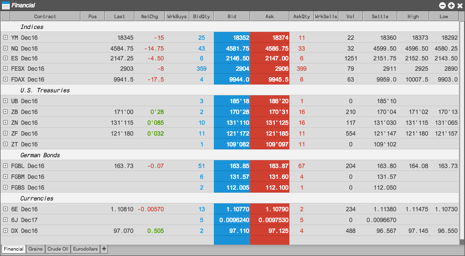

The Market Grid displays market data for numerous instruments in a grid-like format and gives you the ability to quickly trade any of those instruments with an order ticket or MD Trader. You can organize the display of instruments to your liking by using tabs. You can also display market depth for an instrument with a simple mouse click.

You can open the Market Grid widget as follows: